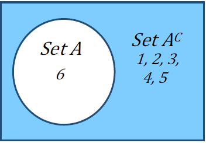
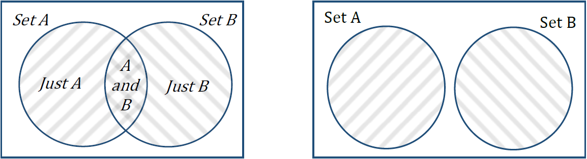

Write the sample space for theoretical probability situations
Identify certain and impossible events
Calculate the theoretical probability of a complement
Determine the difference between empirical and theoretical probability
Explain the Law of Large Numbers
Identify independent and dependent events
Calculate “and” theoretical probabilities
Identify overlapping and disjoint sets
Calculate “or” theoretical probabilities
Calculate probability values for simple games
As we saw in the last section, the probability of a specified event is the chance or likelihood that it will occur. We calculated empirical or experimental probabilities using contingency tables. In this section, we will focus on theoretical probability and compare the two types.
Figure4.2.1.Alternative Video Lessons
Subsection4.2.1Basic Probability Concepts
Let’s begin with a brief introduction to some of the language and basic concepts of theoretical probability.
Subsection4.2.2Experiment
If you roll a die, pick a card from a deck of playing cards, or randomly select a person and observe their hair color, you are conducting an experiment.
Subsection4.2.3Events and Outcomes
The result of an experiment is an outcome. An event is any particular group of outcomes, like rolling a three or a five on a die. An event can be a simple event, which is a single outcome, or a combination of outcomes, called a compound event.
Subsection4.2.4Sample Space
The sample space is the set of all possible outcomes. For example, if we roll a six-sided die, the sample space S is the set \(S={1,2,3,4,5,6}\text{.}\)
Example4.2.2.
If we roll an eight-sided die, describe the sample space and give at least two examples of simple events and compound events.
Solution.
The sample space is the set of all possible outcomes, or equivalently, all simple events: \(S={1,2,3,4,5,6,7,8}\)
Examples of simple events are rolling a 1, rolling a 5, rolling a 6, and so on. Examples of compound events include rolling an even number, rolling a 5 or a 3, and rolling a number that is at least 4.
Subsection4.2.5Equally Likely Outcomes
When the outcomes of an experiment are equally likely, we can calculate the probability of an event as the number of ways it can happen out of the total number of outcomes.
Theoretical Probability.
\begin{equation*}
P(E)=\frac{\text{number of outcomes corresponding to the event E}}{\text{total number of equally-likely outcomes}}
\end{equation*}
We can write the result as a simplified fraction or as a decimal or percent.
Example4.2.3.
Write the sample space for the sum of two fair six-sided dice and determine whether the outcomes are equally likely.
Solution.
The sample space for the sum of two fair six-sided dice is \(S={2,3,4,5,6,7,8,9,10,11,12}\text{.}\) The different sums, however, are not equally likely. If we look at a table of the different possible outcomes when rolling two dice, we see that there are 36 possible combinations. We will summarize this in a table by listing each outcome in the sample space. Then we find the probabilities by counting the number of ways each sum can occur and dividing it by 36.
1
2
3
4
5
6
1
\(1+1=2\)
\(1+2=3\)
\(1+3=4\)
\(1+4=5\)
\(1+5=6\)
\(1+6=7\)
2
\(2+1=3\)
\(2+2=4\)
\(2+3=5\)
\(2+4=6\)
\(2+5=7\)
\(2+6=8\)
3
\(3+1=4\)
\(3+2=5\)
\(3+3=6\)
\(3+4=7\)
\(3+5=8\)
\(3+6=9\)
4
\(4+1=5\)
\(4+2=6\)
\(4+3=7\)
\(4+4=8\)
\(4+5=9\)
\(4+6=10\)
5
\(5+1=6\)
\(5+2=7\)
\(5+3=8\)
\(5+4=9\)
\(5+5=10\)
\(5+6=11\)
6
\(6+1=7\)
\(6+2=8\)
\(6+3=9\)
\(6+4=10\)
\(6+5=11\)
\(6+6=12\)
Sum
Probability
2
\(\sfrac{1}{36}\)
3
\(\sfrac{2}{36}\)
4
\(\sfrac{3}{36}\)
5
\(\sfrac{4}{36}\)
6
\(\sfrac{5}{36}\)
7
\(\sfrac{6}{36}\)
8
\(\sfrac{5}{36}\)
9
\(\sfrac{4}{36}\)
10
\(\sfrac{3}{36}\)
11
\(\sfrac{2}{36}\)
12
\(\sfrac{1}{36}\)
From the probability table we can see that rolling a sum of 7 has the highest probability and rolling a 2 or a 12 have the lowest probabilities.
Example4.2.4.
Suppose we roll a fair six-sided die. Calculate the probability of:
rolling a 6.
rolling a number that is at least 4.
rolling an even number.
rolling a 5 or a 3.
Solution.
Recall that the sample space is \(S={1,2,3,4,5,6}\text{.}\) Since each of the outcomes in the sample space is equally likely, we can find the probability of each event by counting the number of outcomes corresponding to the event and dividing by 6, the total number of equally likely outcomes.
There is only one way to roll a 6, so \(P(\text{rolling a 6}) =\frac{1}{6}\) or approximately 16.7% There is a 16.7% chance of rolling a 6.
In probability we will often come across the phrases “at least” and “at most.” At least means that value or greater. At most means that value or less. Since we are looking for the probability of rolling a number that is at least 4, we need the number of outcomes that are 4 or greater. There are 3 values that meet this condition: 4, 5, and 6. The probability is \(P(\text{rolling a number that is at least 4})=\frac{3}{6}=\frac{1}{2}\) or 50%
Half of the numbers on a die are even, so we calculate: \(P(\text{rolling an even number})=\frac{3}{6}=\frac{1}{2}\) or 50%
There are two ways to roll a 5 or a 3, so \(P(\text{rolling a 5 or a 3})=\frac{2}{6}=\frac{1}{3}\) or approxiamtely 33.3%. There is a 33.3% chance of rolling a 5 or a 3.
Example4.2.5.
Suppose you have a bag containing 14 sweet cherries and 6 sour cherries. If you pick a cherry at random, what is the probability it will be sweet?
Solution.
Each of the cherries are equally likely to be selected since our selection is random and we can assume there is no way to distinguish one cherry from another. This means that the probability of selecting a sweet cherry will be equal to the number of sweet cherries in the bag dived by the total number of cherries in the bag. Since there are 14 sweet cherries and a total of 20 cherries in the bag, we have:
\begin{gather*}
P(\text{sweet})=\frac{14}{20}=\frac{7}{10}\text{ or } 70\%
\end{gather*}
There is a 70% chance of selecting a sweet cherry from the bag.
Subsection4.2.6Certain and Impossible Events
A probability is always a value between 0 and 1, or from 0% to 100%. If the probability of an event is 0 there are no outcomes that correspond with that event and we say it is impossible. If the probability of an event is 1 then every outcome corresponds to that event and we say it is certain.
Example4.2.6.
What is the probability of rolling an odd or even number on a six-sided die?
What is the probability of rolling an 8 on a six-sided die?
Solution.
Since all the numbers are either even or odd, this event includes all of the outcomes in the sample space. This event is certain. \(P(\text{odd or even})=\frac{6}{6}=1\text{ or } 100\%\)
Since 8 is not one of the outcomes in the sample space, the event is impossible. \(P(\text{roll an 8})=\frac{0}{8}=0\text{ or } 0\%\)
Subsection4.2.7Complementary Events
Just as we saw in the logic chapter, the complement of an event A means A does not happen. We can refer to the complement as not A or \(A^{C}\text{.}\) For example, consider the experiment of rolling a six-sided die and the simple event A = rolling a 6. The complement of event A is everything in the sample space that is not a 6: \(A^{C} = {1, 2, 3, 4, 5}\text{.}\) Recall that we can illustrate the complement using a Venn diagram as shown below.

Notice that the outcomes from set A and the outcomes from set \(A^{C}\) will together equal the universal set, which is the sample space in probability. The probabilities must add up to 1 or 100%. Therefore, we can use subtraction to find the probability of a complement.
Complement of an Event.
\begin{equation*}
P(A^{C})=1-P(A)
\end{equation*}
Example4.2.7.
If you roll an eight-sided die, what’s the probability you don’t get a 6?
Solution.
Not rolling a 6 is the complement of rolling a 6, which is easier to calculate. Since there are 8 possible numbers to roll, we have:
\begin{gather*}
P(\text{not rolling a 6})=1-P(\text{rolling a 6})=1-\frac{1}{8}=\frac{7}{8}\text{ or } 0.875
\end{gather*}
There is an 87.5% chance of not rolling a 6.
Subsection4.2.8Experimental vs. Theoretical Probability
Now that we have calculated experimental and theoretical probabilities, we can compare them. When we flip a fair coin, we say there is a 50% chance of getting heads. This is a theoretical probability because there are two equally likely outcomes – heads and tails – so we expect to get heads half of the time. But if you flip a coin, say 100 times, will you get heads exactly 50 times? Maybe, but you are more likely to get some number around 50 times. The number of heads you actually observe out of the total number of times you flip the coin is the experimental probability.
Example4.2.8.
The table shows the numbers that came up after rolling a six-sided die 10 times. What is the experimental probability of rolling a 6? What is the theoretical probability of rolling a 6?
Roll
1
2
3
4
5
6
7
8
9
10
Outcome
3
1
4
6
6
6
1
3
5
1
Solution.
To find the experimental probability of rolling a 6, it would be helpful to change this into a frequency table. We list all the possible outcomes and count how many times each occurred.
Outcome
Frequency
1
3
2
0
3
2
4
1
5
1
6
3
According to our frequency table, we see that a 6 was rolled three times, so the experimental probability of rolling a 6 is \(P(\text{roll 6})=\frac{3}{10}\) or 30%.
Theoretically, however, we would expect the number 6 to come up 1 out of 6 times since there are 6 equally likely outcomes. Thus, the theoretical probability of rolling a 6 is \(P(\text{roll 6})=\frac{1}{6}\) or approximately 16.7%
Subsection4.2.9The Law of Large Numbers
As we saw in the previous example, theoretical and experimental probabilities are not necessarily equal. However, experimental probability will eventually approach theoretical probability as we conduct more and more trials. This phenomenon is called the Law of Large Numbers. This means if you flip a fair coin a small number of times, the experimental probability is likely to be different each time and could be very different from the theoretical probability. But if you flip a coin a large number of times, the experimental probability becomes very close to the theoretical probability of 50%. The Law of Large Numbers is extremely powerful in that it allows us to approximate the theoretical probability of complex events – like changes in beliefs and opinions, likelihood of natural disasters, climate change effects – through repeated sampling and simulation.
Subsection4.2.10Probability of Compound Events
Now that we have the basics in place, let’s look at some compound probability problems that we will be studying in this course.
Subsection4.2.11“And” Probabilities
As we saw with truth tables, the event A and B refers to an event where both A and B occur. These events may occur at the same time or they could happen in a sequence such as A and then B. How we calculate the theoretical probability of the event A and B (or A and then B) depends on whether the two events are independent or dependent.
Subsection4.2.12Independent and Dependent Events
Two events A and B are independent if the probability of B occurring is the same whether or not A occurs. If the probability of B is affected by the occurrence of A, then we say that the events are dependent.
Coin flips and die rolls are common examples of independent events – flipping heads does not change the probability of flipping heads the next time, nor does rolling a six change the probability that the next roll will be a six.
Another type of event is a selection event, such as randomly selecting or drawing items from a bag, etc. These are also independent if we draw with replacement. By replacing the item, we reset the probability back to what it was before we made the selection. Since the probability of each subsequent selection is the same as the first selection, the events are independent.
If we draw without replacement, however, like selecting multiple people for a committee, we change the total number of possible outcomes, thereby changing the probability of subsequent selections. Therefore, if we draw without replacement, the events will be dependent.
Example4.2.9.
Determine whether the following events are independent or dependent.
Flipping a fair coin twice and getting heads both times.
Selecting a president and then a vice president at random from a pool of five equally qualified individuals.
The event that it will rain in Portland tomorrow and the event that it will rain in Beaverton tomorrow.
Wearing your lucky socks and getting an A on your exam.
Solution.
The probability of getting heads on the first flip is 0.5 or 50%. After flipping heads, the probability of getting heads on the second flip is still 0.5 or 50%. Since the probability of flipping heads on the second flip did not change because we flipped heads on the first flip, the events are independent.
Since two different people will be put in the role of president and vice president, we are drawing without replacement and the events are therefore dependent.
If it is raining in Portland it is more likely that it will rain in Beaverton, so the events are dependent.
Although there may some sort of placebo effect at play in terms of confidence and persistence, the socks you wear do not have a direct effect on how well you do on your exam, so these events are independent.
To calculate “and” probabilities we multiply, but we need to determine whether the events are independent or dependent. If they are independent, then we can multiply the individual probability of each event because one does not affect the other. If the events are dependent, then we need to multiply by the conditional probability based on what has previously happened. Here is a summary of this.
“And”.
Probabilities If events A and B are independent, then \(P(A \text{ and } B)=P(A)\cdot P(B)\)
If events A and B are dependent, then \(P(A \text{ and } B)=P(A)\cdot P(B \text{ given } A)\)
The probability of B given A is called a conditional probability since it depends, or is conditional, on A occurring. We saw examples of conditional probability when we looked at contingency tables in the previous section.
Example4.2.10.
Suppose you have a bag containing 6 red Legos, 4 green Legos, and 3 black Legos. We will make exactly two lego selections from the bag. What is the probability of selecting:
two red Legos in a row if we put the first red Lego back in the bag?
two red Legos in a row if we don’t put the first Lego back in the bag?
a red Lego and then a green Lego if we do not put the red Lego back in the bag?
Solution.
Since the outcomes are equally likely, the probability of selecting a red Lego is the number of red Legos divided by the total number of Legos, or \(P(\text{red})=\frac{6}{13}\text{.}\)
If we replace the red Lego we selected (selections are independent), we go back to having 6 red Legos in the bag of 13 Legos total. Therefore,
\begin{align*}
P(\text{red and then red})\amp=P(\text{red})\cdot P(\text{red})\\
\amp=\frac{6}{13}\cdot\frac{6}{13}\\
\amp\approx 0.213 \text{ or } 21.3\%
\end{align*}
If we do not replace the first red Lego (selections are dependent), then on our second draw there will only be 5 red Legos remaining, and 12 Legos in total. Therefore,
\begin{align*}
P(\text{red and then red})\amp=P(\text{red})\cdot P(\text{red given red taken out})\\
\amp=\frac{6}{13}\cdot\frac{5}{12}\\
\amp\approx 0.192 \text{ or } 19.2\%
\end{align*}
The probability of selecting a red Lego on the first draw is the same as in parts a and b. Since we are not putting the red Lego back into the bag, we will have only 12 Lego left in total, of which 4 are green. Therefore,
\begin{align*}
P(\text{red and then green})\amp=P(\text{red})\cdot P(\text{green given red taken out})\\
\amp=\frac{6}{13}\cdot\frac{4}{12}\\
\amp=\frac{6}{13}\cdot\frac{1}{3}\\
\amp\approx 0.154 \text{ or } 15.4\%
\end{align*}
Let’s look at an example where we repeat an event many times.
Example4.2.11.
Suppose there is a 6% chance you will receive a citation if you ride the MAX train without a ticket. What is the probability that you get away without a single citation if you ride without purchasing a ticket for 20 days this month?
Solution.
The first thing we want to recognize is that this question is essentially asking for the probability of no citation and no citation and no citation…. twenty times (one for each day you ride without buying a ticket). Since the outcomes are connected by an “and”, we know we will be multiplying the probabilities. In this case the the outcomes are independent (you are not more or less likely to get a citation if you already received a citation). Therefore,
\begin{align*}
P(\text{no citation in 20 rides})\amp=P(\text{no citation on a single ride})^{20}\\
\amp=(1-0.06)^{20}\\
\amp=(0.94)^{20}\\
\amp\approx 0.290 \text{ or } 29.0\%
\end{align*}
Subsection4.2.13“Or” Probabilities
The event A or B refers to an event that includes the outcomes of A or B or both. We have seen the inclusive “or” both in terms of sets and logic, and in terms of contingency tables. The way we calculate the probability of A or B depends on whether the events have characteristics that are overlapping or disjoint.
Subsection4.2.14Overlapping or Disjoint Sets
Recall that disjoint means the same thing as not overlapping. Just like we saw in the logic and sets chapter, the set diagram on the left shows overlapping sets and the set diagram on the right shows disjoint sets.

To apply this to probability, we will look at an example of events that have overlapping characteristics, such as color and shape.
Example4.2.12.
A prize machine is filled with 10 yellow erasers, 6 green erasers, 4 red pencil sharpeners, 8 yellow pencil sharpeners, and 5 red bouncy balls. Each prize is inside a plastic sphere, and the spheres are well mixed in the prize machine. Each game will get you just one prize. Determine the probability of
getting a yellow prize.
getting a red or yellow prize.
getting a prize that is yellow or an eraser.
Solution.
Since yellow is a single event, we just need to know how many prizes there are in total, and how many of the prizes are yellow. The yellow prizes include the 10 yellow erasers and the 8 yellow pencil sharpeners.
\begin{align*}
P(\text{yellow})\amp=\frac{18}{33}\\
\amp\approx 0.545 \text{ or } 54.5\%
\end{align*}
For a red or yellow prize, the set of red and the set of yellow do not overlap. They are disjoint sets, so we will add the probability of getting a red prize to the probability of getting a yellow prize.
\begin{align*}
P(\text{red or yellow})\amp=P(\text{red})+P(\text{yellow})\\
\amp=\frac{9}{33}+\frac{18}{33}\\
\amp=\frac{27}{33}\\
\amp\approx 0.818 \text{ or } 81.8\%
\end{align*}
To find the probability of getting a prize that is yellow or an eraser, we need to be careful because these are overlapping sets. There are two ways to calculate this, and it is a lot like what we did with contingency tables. The first way is to add all the items separately, being careful not to double count.
\begin{align*}
P(\text{yellow or eraser})\amp=P(\text{yellow eraser})+P(\text{yellow pencil sharpener})+P(\text{green eraser})\\
\amp=\frac{10}{33}+\frac{8}{33}+\frac{6}{33}\\
\amp=\frac{24}{33}\\
\amp\approx 0.727 \text{ or } 72.7\%
\end{align*}
The second way is to count the total of yellow items and the total of erasers, but the yellow erasers are in both sets, or the overlap. We would be counting them twice and so we subtract their joint probability.
\begin{align*}
P(\text{yellow or eraser})\amp=P(\text{yellow})+P(\text{eraser})-P(\text{yellow and eraser})\\
\amp=\frac{18}{33}+\frac{16}{33}-\frac{10}{33}\\
\amp=\frac{24}{33}\\
\amp\approx 0.727 \text{ or } 72.7\%
\end{align*}
Here is a summary of how we found the “or” probabilities.
“Or” Probabilities.
If the sets are disjoint, \(P(A \text{ or } B) = P(A) + P(B)\)
If the sets are overlapping, \(P(A \text{ or } B) = P(A) + P(B) – P(A \text{ and } B)\)
We could also use the overlapping formula as a general formula, because in the case of disjoint sets, there is no intersection and \(P(A \text{ and } B)=0\text{.}\) Here is another example with overlapping events.
Example4.2.13.
What is the probability of rolling two fair dice and getting a pair or a sum of 6?
Solution.
For complicated events it’s a good idea to list all of the outcomes. Here we list them in a table. Looking at the table of outcomes, we see that there are 36 in total. Six outcomes that are pairs lie along the upper-to-lower diagonal that goes through \(\highlight{3+3=6}\text{.}\) There are 5 outcomes that add to 6 along the lower-to-upper diagonal line that also goes through \(\highlight{3+3=6}\text{.}\) That outcome is both a pair and a sum of 6, so the events are overlapping.
1
2
3
4
5
6
1
\(\highlight{1+1=2}\)
\(1+2=3\)
\(1+3=4\)
\(1+4=5\)
\(\highlight{1+5=6}\)
\(1+6=7\)
2
\(2+1=3\)
\(\highlight{2+2=4}\)
\(2+3=5\)
\(\highlight{2+4=6}\)
\(2+5=7\)
\(2+6=8\)
3
\(3+1=4\)
\(3+2=5\)
\(\highlight{3+3=6}\)
\(3+4=7\)
\(3+5=8\)
\(3+6=9\)
4
\(4+1=5\)
\(\highlight{4+2=6}\)
\(4+3=7\)
\(\highlight{4+4=8}\)
\(4+5=9\)
\(4+6=10\)
5
\(\highlight{5+1=6}\)
\(5+2=7\)
\(5+3=8\)
\(5+4=9\)
\(\highlight{5+5=10}\)
\(5+6=11\)
6
\(6+1=7\)
\(6+2=8\)
\(6+3=9\)
\(6+4=10\)
\(6+5=11\)
\(\highlight{6+6=12}\)
As in the last example, there are two ways to do this.
If we add all of the pairs and sums of 6 without double counting, we get:
\begin{align*}
P(\text{pair or sum of 6})\amp=P(\text{pair})+P(\text{sum of 6 that haven't been counted})\\
\amp=\frac{6}{36}+\frac{4}{36}\\
\amp=\frac{10}{36}\\
\amp\approx 0.278 \text{ or } 27.8\%
\end{align*}
To use the subtraction method, we need to add the probability of rolling a pair to the probability of rolling a sum of 6 and subtract the overlap. Thus we have:
\begin{align*}
P(\text{pair or sum of 6})\amp=P(\text{pair})+P(\text{sum of 6})-P(\text{pair and a sum of 6})\\
\amp=\frac{6}{36}+\frac{5}{36}-\frac{1}{36}\\
\amp=\frac{10}{36}\\
\amp\approx 0.278 \text{ or } 27.8\%
\end{align*}
Now that we have looked at empirical and theoretical probability, we will be able to use them for something very important in the next section – expected value.
Exercises4.2.15Exercises
1.
A ball is drawn randomly from a jar containing 6 red marbles, 2 white marbles, and 5 yellow marbles. Find the probability of:
Drawing a white marble.
Drawing a red marble.
Drawing a green marble.
Drawing two yellow marbles if you draw with replacement.
Drawing first a red marble then a white marble if marbles are drawn without replacement.
2.
Compute the probability of tossing a fair six-sided die and getting:
an even number.
a number less than 3.
3.
Compute the probability of rolling a fair 12-sided die and getting:
a number other than 8.
a 2 or 7.
4.
A fair six-sided die is rolled twice. What is the probability of getting:
a 6 on both rolls?
a 5 on the first roll and an even number on the second roll?
5.
Suppose that 21% of people own dogs. If you pick two people at random, what is the probability that neither own a dog?
6.
At some random moment, you look at your digital clock and note the minutes reading.
What is probability the minutes reading is 15?
What is the probability the minutes reading is 15 or less?
7.
What is the probability of flipping a fair coin three times
and getting a head each time?
not getting a head at all?
8.
What is the probability of rolling two fair six-sided dice
and getting a sum greater than or equal to 7?
getting an even sum or a sum greater than 7?
9.
A box contains four black pieces of cloth, two striped pieces, and six dotted pieces. A piece is selected randomly and then placed back in the box. A second piece is selected randomly. What is the probability that:
both pieces are dotted?
the first piece is black, and the second piece is dotted?
one piece is black, and one piece is striped?
10.
Compute the probability of rolling five fair six-sided dice (each side has equal probability of landing face up on each roll) and getting:
a 3 on all five dice.
at least one of the die shows a 3.
11.
If you pick a card from a standard deck of 52 cards, what is the probability of getting
a 7?
a club?
a spade or a club?
a diamond or a 5?
12.
A box of chocolates contains 7 dark chocolate pieces and 3 milk chocolate pieces (and no others). If you randomly pick 2 pieces and eat each chocolate after choosing it, what is the probability of choosing at least one dark chocolate? Write the probability in all three forms.
13.
A bag contains 3 green marbles, 4 red marbles, and 5 blue marbles (and no others). If you randomly pull out three marbles all at once, what is the probability that you choose 3 blue marbles? Write the probability in all three forms.
14.
A bag contains 3 green marbles, 4 red marbles, and 5 blue marbles (and no others). If you randomly pull out a marble and put the marble back 3 times, what is the probability that you pull out a blue marble all 3 times? Write the probability in all three forms.
15.
A bag contains 3 green marbles, 4 red marbles, and 5 blue marbles (and no others). If you randomly pull out three marbles all at once, what is the probability that you choose at least 1 blue marble? Write the probability in all three forms.